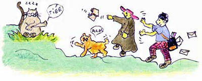

Lullaby n° 2
ovverosia
Come il feroce reincontra il suo nemico e della turba che ne deriva

Giacea un dì di festa, sdraiato alla finestra
Fiocco, feroce cane, guardando le sottane.
Poltriva a tutto spiano il putrido ruffiano.
Bavoso eppur sereno, ronfava come un treno.
Rilucente di raso, Mimmo eroe per caso
tornava da una festa con zampa fiera e lesta.
Stanco di quei bagordi e coi baffacci lordi
non s'avvide l'Impavido del cagnaccio un pò laido.
Già l'osserva quel nano che con salto gitano
trotterella fischiando e lo afferra danzando.
Fra un flamenco e un minuetto già lo insegue sul tetto.
Che rumore, che rissa!…
Don Peppino, alla Messa vede il cane che assale
e gli lancia solenne un antico messale.
Ma in quel grande casino fa “mea culpa” per l'ira
sbaglia e prende il postino mentre scende la sera.
L'impiegato postale allibito e un pò serio
fece mente locale e si becca il breviario.
Al che tutta la turba si ritrova sul tetto
inseguendo il cagnaccio, afferrado il micetto.
Ma una tegola cede sulla testa del prete
che si aggrappa al postino che si regge al gattino.
Ma quel cane feroce con un gesto rapace
già li salva, li afferra trascinandoli a terra.
Fra i contusi e gli illesi si ritrovano stesi
Mimmo un poco spiazzato, Fiocco un pò vulnerato.
Della turba insensata si parlò fino a notte
c'è chi prese la gloria e chi rese le botte.
E chi scrive ripaga….quelle tegole rotte!…
M.J.M 93

Mimmo: Mimmo, soriano dalla zampa di velluto
Fiocco: Fiocco il cagnaccio nano